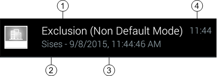

Mobile App Notifications Reference
Notifications ensure you are alerted to new events of the connected Desigo CC management platform when you are not inside the app, or when you are not using the mobile device. When the app is open in the foreground you are instead alerted within the app itself.

Full push notification functionality, on iOS and Android, requires the Push Notification extension to be installed. Without it, the system falls back to local (pull) notifications, which work only on Android. For details see Fallback to Local (Pull) Notifications, below.
Appearance of Notifications
Notifications use the standard mobile operating system attributes such as vibration, sound, transient popups or banners, and notification icons or badges. Typically, when a notification comes in:
- You will hear a notification sound, if enabled in your device settings.
- On Android, you will see the app’s notification icon (and transient message) placed in the notification bar at the top of the screen.
- On iOS you will see a transient notification banner or popup that includes the notification icon, and a notification badge placed on the Desigo CC app icon.

Interaction with Notifications
- Open the device's notification panel, which displays the list of notifications and details about them.
- In the notification panel, you can interact with the mobile app notification.
- Tap the notification item to open the app.
- Swipe the notification item away to dismiss it.
Information in the Notification Item
Mobile app notifications may display individually, or they may be stacked (grouped together). In the case of stacked notifications, the information that displays pertains to the most recently notified event. Depending on the mobile device operating system, the stacked item may also indicate the total number of other new events notified, in addition to the one displayed.

| Description |
1 | Event cause (description of the alarm). |
2 | Event source (system object that issued the alarm). |
3 | Date and time when the event occurred (sent by management platform). |
4 | Time when the notification was received (inserted by the mobile operating system). |
Push Notifications After Loss of Connectivity
If the device is turned off, goes offline, or otherwise loses internet connectivity (for example, no WiFi or mobile data signal) pending push notifications will display as follows when the device comes back online:
- On iOS devices, if multiple events occur while the device is offline, only the last notification is shown when the device comes back online.
- On Android devices, if multiple events occur while the device is offline, all pending notifications (up to a maximum of 100) are shown when the device comes back online.
Fallback to Local (Pull) Notifications
If Desigo CC is not configured to support push notifications, mobile app clients fall back to a local (“pull”) notification functionality, which has the following limitations:
- Local notifications work only on Android devices, not on iOS.
- Local notifications require the app to be still running in the background. They will cease if the app is explicitly closed, force-stopped, or halted by a power-saving mode, or if the device is turned off.
- Local notifications also cease in the following situations:
- When 48 hours have elapsed since your last sign-in.
- When the device is unable to communicate with the Desigo CC server for more than 10 minutes--for example because the device loses its network connection (Wi-Fi or 3/4G), or because the server itself goes offline.
When local notifications cease, you are also automatically logged out. A notification (you have been logged out...) informs you of this. You must manually sign in again to reconnect.
In addition to alerting you of new events, the local notifications also alert you when the connection to the server is lost (server not available since...) and when it is reinstated again (server available since...)
Fallback to local notifications is decided during the login phase. If the push notifications become unavailable while the user is logged into the app, fallback will start only when the user logs out and then logs in again.
Filtering or Deactivation of Notifications
From the mobile app settings, the user can filter the notifications so that only events belonging to certain categories trigger a notification. It is also possible to turn off the notifications entirely. For instructions see: Filter or Deactivate Notifications.
The category filters and deactivation apply to both push notifications and the fallback pull notifications.
Notifications and Logout
Logging out of the mobile app disconnects it from the Desigo CC management platform. After logging out, all types of notifications (push notifications and fallback local notifications) cease.
Related Topics
Troubleshooting – Mobile App Local Notifications Do Not Display